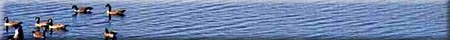
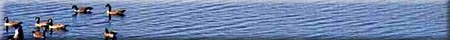

Threats to Fish Habitat
|
Fish live in most of the waterbodies in Saskatchewan; from the large lakes of the north and the major rivers flowing through the province, to the smaller dugouts and ponds of the southern areas. Fish habitat is vulnerable to many threats, like municipal waste, agricultural chemicals and even silt from eroding shorelines. Good fish habitat supplies the food, shelter, water and space that fish need at each stage of their life cycle. Our activities can bring about subtle changes, from those that are obvious to those that become apparent only when the fish are gone. |

Solve the Problem
Take a look at the following problems with fish habitat. Each can be linked to a cause (major fish habitat threat). See if you can choose the correct one. If you choose the correct solution, more information will be provided. Pay particular attention to the colored text on the information page.
Problem # 1
During the last dry season, water was pumped from nearby Watersmith Stream for use in irrigation of crops. Normally, the fish that inhabit Watersmith Pond survive year after year. By the end of the season, though, few fish survived.
What is the main reason for the fish kill?
Phosphorus and Nitrogen / Sediment / Loss of Cover / Pollution / Barriers / Changing Flows / Invader Species
Problem #2
A popular recreational lake has recently been developed to accommodate the growing number of beachgoers and boaters using the lake. The shoreline has been bulldozed to create additional beach area. Adjacent to the beach, a long, man-made earth pier has been constructed which forms a new boat launch area. Attached to the pier are several wooden floating piers for mooring up to 50 boats. While humans in the area now enjoy the weed-free, shallower water and long beach area, trout that were once common in that area, have disappeared.
What has happened?
Phosphorus and Nitrogen / Sediment / Loss of Cover / Pollution / Barriers / Changing Flows / Invader Species
Problem #3
Little Lake in southern Saskatchewan supports a wide variety of native fish. In the last five years, the lake must be stocked since winterkill has occurred. It has been found that the water contains mega-amounts of algae. At the end of the summer, the algae die and decompose. In the springtime, Little Lake smells like rotten eggs.
What causes the excess algae?
Phosphorus and Nitrogen / Sediment / Loss of Cover / Pollution / Barriers / Changing Flows / Invader Species
Problem #4
Purple Loosestrife is a colorful aquatic plant. In recent years, it has been found in many wetlands and major waterways of the prairies. Shoreland and aquatic vegetation is important to fish habitat, yet there has been a reduction in the number of varieties of fish inhabiting these areas.
Why, with the presence of vegetation, are fish populations dwindling?
Phosphorus and Nitrogen / Sediment / Loss of Cover / Pollution / Barriers / Changing Flows / Invader Species
Problem #5
The numbers of fish that migrate to a spawning ground in northern Saskatchewan is on the decline. Development in the area has resulted in the roadways being built to allow access to more remote areas of the province. Culverts were installed to maintain the flow of water from one side to the other.
Why are fish not reaching spawning grounds and other critical habitat areas?
Phosphorus and Nitrogen / Sediment / Loss of Cover / Pollution / Barriers / Changing Flows / Invader Species
Problem #6
Biologists are studying northern pike caught from a lake in Saskatchewan. The lake is the result of the flooding of new land behind a dam recently built in the area. Some fish appear in poor condition with skeletal deformities and gill and fin abnormalities. Other fish seem unaffected.
Is there an explanation for the abnormalities?
Phosphorus and Nitrogen / Sediment / Loss of Cover / Pollution / Barriers / Changing Flows / Invader Species
Problem #7
Pebble Creek is home to spawning trout. Trout require clean stream bottoms and incubating eggs must receive a good supply of oxygen in order to hatch. Two years ago near Pebble Creek, a gun-barrel-straight drainage ditch was built to get water off farmland faster. Trout have disappeared from this waterbody yet bullhead suckers and fathead minnows continue to thrive.
What is the reason for disappearance of the trout, yet survival of other species?
Phosphorus and Nitrogen / Sediment / Loss of Cover / Pollution / Barriers / Changing Flows / Invader Species